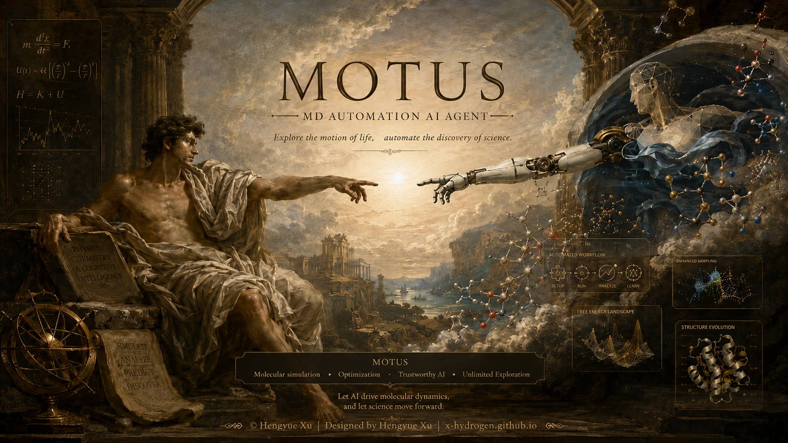
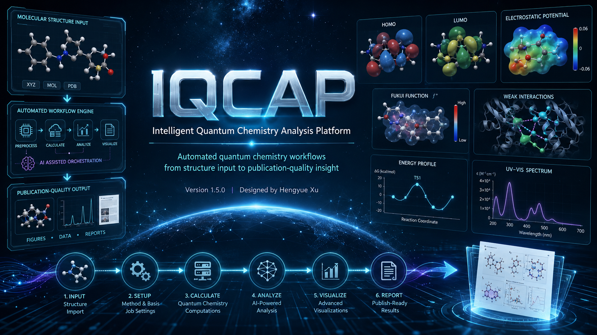

Hengyue Xu
Ph.D. Student in Chemistry
Tsinghua University · University of Melbourne · Curtin University
AI-Driven Quantum Chemistry for Energy Systems
Quantum-to-Materials Design of Energy Systems Using AI, DFT, and Molecular Dynamics.
Building AI-assisted quantum chemistry workflows that connect molecular electronic structure, reaction dynamics, and materials behavior across energy systems.
AI for Chemistry
Quantum Chemistry
Molecular Energy Systems
DFT + Molecular Dynamics
2021
B.Sc. in Chemistry, Nanjing Tech University
2024
M.Sc. in Chemistry, Tsinghua University
Now
Ph.D. student, Department of Chemistry, Tsinghua University
Visiting
Visiting Research Associate at Curtin University; University Guest (Academic) in Chemical Engineering at the University of Melbourne
Citation Geography
Institutional geography of citing papers.
Countries and regions are aggregated from the institutions of citing works; the ring network highlights frequent regions and cross-region co-occurrence.
Click a node or link
Inspect countries, cross-region co-occurrence, and representative citing institutions.
Global Overview
Citation distribution aggregated by the country or region of citing works' author institutions.
Top citing regions: China, Australia, South Korea, United States, European Union, Germany
China
Citation geography node aggregated from citing works' author institutions.
East Asia · Citation distribution node
AI + Quantum Chemistry
Computable descriptors connect quantum mechanisms with molecular energy-system design.
AI-Guided Descriptors
Machine-learning-ready descriptors organize quantum chemical outputs into interpretable design rules for reactive energy materials.
Quantum-to-Dynamics Links
DFT, AIMD, and enhanced sampling connect electronic structure with interfacial pathways, barriers, and molecular motion.
Molecular Energy Systems
Metal-sulfur chemistry, electrolytes, catalytic interfaces, and molecular additives are treated as coupled energy systems.
Research Tools I Build
Open-source tools for AI-assisted quantum chemistry and molecular dynamics.
MOTUS and IQCAP turn simulation and electronic-structure workflows into reproducible analysis, visualization, and design pipelines.

MOTUSMolecular Dynamics Automation Agent
Post-processes MD simulations across Desmond, GROMACS, and LAMMPS into quantitative insights and publication-ready figures.
View GitHub
IQCAPIntelligent Quantum Chemistry Analysis Platform
Automates molecular structure input, electronic-structure analysis, reactivity descriptors, and publication-quality visualization.
View GitHubNews
Recent papers, journal covers, and research milestones.
Recent highlights from journal covers, paper selections, and research milestones.
Selected Publications
Representative papers link quantum chemistry, AI-ready descriptors, and molecular energy reactions.
Selected studies cover DFT/AIMD mechanisms, interfacial redox chemistry, sulfur-conversion kinetics, and descriptor-driven energy-system design.
Paper Collaboration Network
Collaborating institutions across selected papers.
Built from OpenAlex authorship institution metadata for selected DOI records. Nodes represent universities or institutes, while links mark co-appearance in the same publication.
Tsinghua University
Hover or click an institution node to inspect authors, papers, and source metadata.
OpenAlex authorship institution data
Live Scholarly Pulse
Scholar metrics track an AI-assisted quantum chemistry program for molecular energy systems.
Last checked: loading
Quantum Mechanisms
Electronic structure, orbital interactions, and reaction pathways define the microscopic design space.
AI-Ready Descriptors
Computable descriptors translate DFT and molecular dynamics outputs into learnable structure-property rules.
Energy-System Outputs
Selectivity, barriers, transport, and interfacial stability provide chemically interpretable performance outputs.
Scientific Collaboration
Open to collaboration on mechanistic electrochemistry and catalytic interfaces.
xuhy24@mails.tsinghua.edu.cn
xuhy21@tsinghua.org.cn
Current Base
Tsinghua University
Chemistry
Research Visits
University of Melbourne
Curtin University
Shenzhen Bay Laboratory